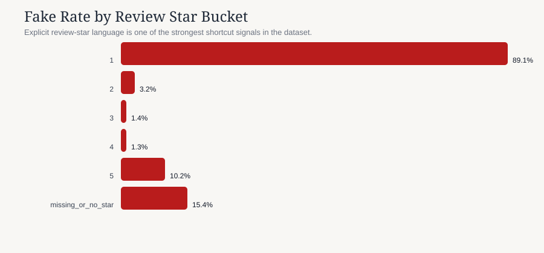

The strongest predictors are useful, but some of them are dangerously close to workflow artifacts.
What we learned
- Review stars are explosive: `1/5 stars` pushes fake rate to 89.1%.
- Missing delivery data is risky: overall fake rate jumps to 63.5% when delivery category is absent.
- Pricing is not just “cheap = fake”: aggressive overpricing relative to confirmed references is also suspicious.
- Products repeat constantly: the same names appear over and over, which can inflate apparent generalization.
Business implication
A high-scoring model can still be brittle if it mainly learns workflow shortcuts. The job is not just to predict fake listings; it is to predict them for the right reasons and in a way that survives new products, new merchants, and new review patterns.



The single most important pattern in this dataset is not a standalone column. It is the interaction between fulfillment mode and missing delivery metadata.
80.0% fake rate across 155 rows. This is far beyond the base rate and likely reflects a workflow state, not just a product signal.
73.1% fake rate across 160 rows. The same pattern repeats in another operational channel, strengthening the shortcut hypothesis.
32.1% fake rate across 131 rows. Still risky, but notably less extreme than BUSINESS or CENTRAL.